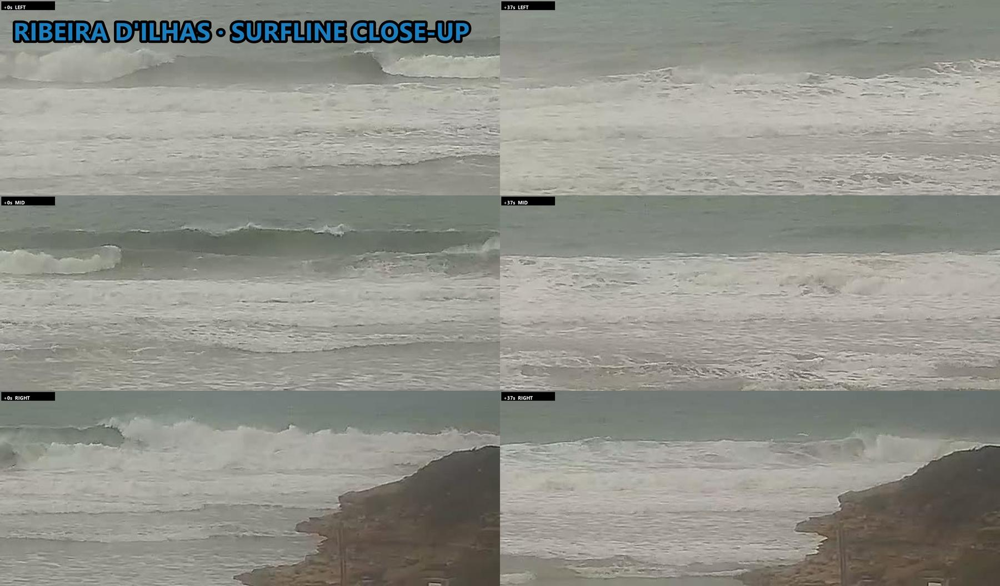
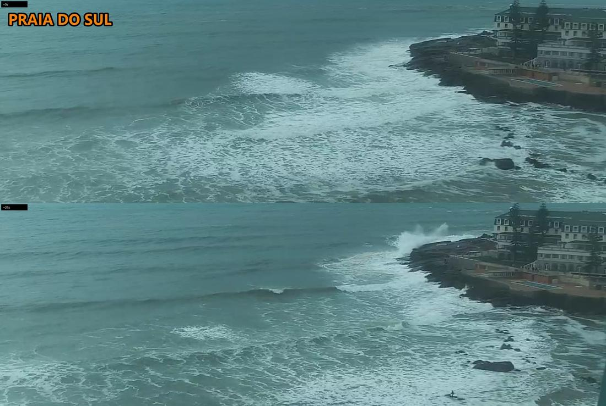
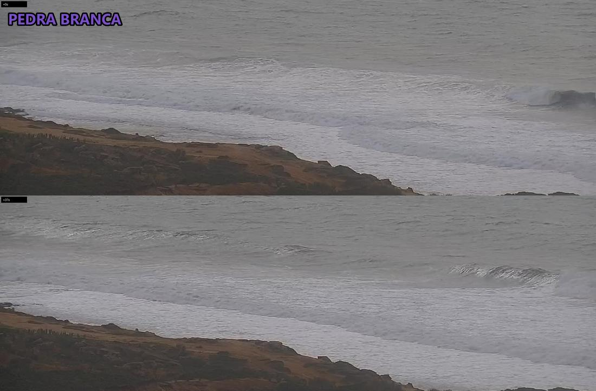
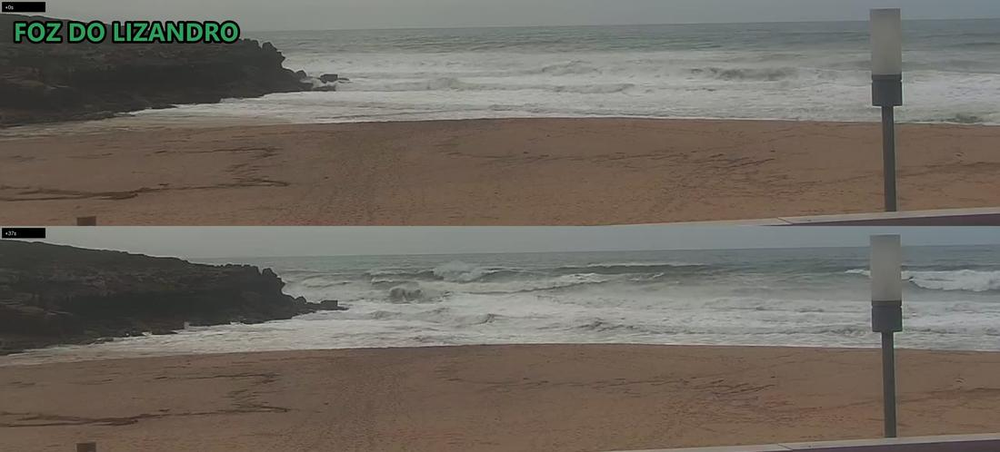

2.4–3.0m★💤 Skip
2.4–3.0m★💤 Skip
liveoffline
| Ribeira | ★ | 2.4-3m | closeouts, empty | 0 | ||
|---|---|---|---|---|---|---|
| Norte | ★★ | 2.4-3m | ||||
| Sul | ★★½ | 2.4-3m | messy, ridden | +½★ | 2+ quiet | |
| Pedra | ★ | 2.4-3m | closing out | -1★ | 0 | |
| Lizandro | ★ | 2.4-3m | closeouts | -1★ | 0 |
| Ribeira | ★ | 2.4-3m | |
|---|---|---|---|
| Norte | ★★ | 2.4-3m | |
| Sul | ★★½ | 2.4-3m | |
| Pedra | ★ | 2.4-3m | |
| Lizandro | ★ | 2.4-3m |
| Ribeira | closeouts, empty | 0 | |
|---|---|---|---|
| Sul | messy, ridden | +½★ | 2+ quiet |
| Pedra | closing out | -1★ | 0 |
| Lizandro | closeouts | -1★ | 0 |
Wave size & rating: surf-forecast.com Ribeira >>
2.4–3.0m★💤 Skip
2.4–3.0m★💤 Skip
2.4–3.0m★💤 Skip
2.4–3.0m★💤 Skip
2.4–3.0m★💤 Skip
2.4–3.0m★💤 Skip
2.4–3.0m★★🤔 Marginal
2.4–3.0m★★🤔 Marginal
2.4–3.0m★★½🤔 Marginal🏄 Quiet
2.4–3.0m★★🤔 Marginal
2.4–3.0m★★½🤔 Marginal🏄 Quiet
2.4–3.0m★★🤔 Marginal
2.4–3.0m★💤 Skip
2.4–3.0m★★🤔 Marginal
2.4–3.0m★💤 Skip
2.4–3.0m★★🤔 Marginal
2.4–3m★★forecast🤔 Marginal
2.4–3.0m★💤 Skip
2.4–3.0m★★🤔 Marginal
2.4–3.0m★💤 Skip
2.4–3.0m★★🤔 Marginal
2.4–3.0m★💤 Skip
2.4–3.0m★★🤔 Marginal
2.4–3.7m★forecast💤 Skip
2.4–3.7m★★forecast🤔 Marginal
2.4–3.0m★💤 Skip
0 surfers
storm sets shutting across point, whitewater inside; close-up L0 M0 R0 / L0 M0 R0 -> 0, beach empty

2.4–3.0m★★½🤔 Marginal🏄 Quiet
2 surfers
lines wrapping the point, messy inside; ~2 out, rides seen on sheet +12s/+48s and crowd crop

2.4–3.0m★💤 Skip
0 surfers
heavy sets breaking into broad whitewater; detail readable, nobody out

2.4–3.0m★💤 Skip
0 surfers
walled storm closeouts across bay; nobody out, beach empty

| When | Ribeira | Norte | Sul | Pedra | Lizandro |
|---|---|---|---|---|---|
| 2026-11-20 14:15afternoon | POOR0 | POOR-TO-FAIR— | POOR-TO-FAIR2 | POOR-TO-FAIR0 | POOR-TO-FAIR0 |
| 2026-11-20 12:00lunch | POOR-TO-FAIR0 | POOR-TO-FAIR— | POOR-TO-FAIR2 | POOR-TO-FAIR0 | POOR-TO-FAIR0 |
| 2026-11-20 09:45morning | POOR-TO-FAIR0 | POOR-TO-FAIR— | POOR-TO-FAIR2 | POOR-TO-FAIR0 | POOR-TO-FAIR0 |
| 2026-11-20 07:30sunrise | ?0 | — | ?0 | ?0 | ?0 |
| 2026-11-19 16:15dusk | POOR0 | POOR— | POOR0 | POOR0 | POOR0 |
| 2026-11-19 14:15afternoon | POOR0 | POOR— | POOR0 | POOR0 | POOR0 |
| 2026-11-19 12:00lunch | POOR0 | VERY-POOR— | VERY-POOR0 | POOR0 | ?0 |
| 2026-11-19 09:45morning | POOR0 | VERY-POOR— | VERY-POOR0 | POOR0 | POOR— |